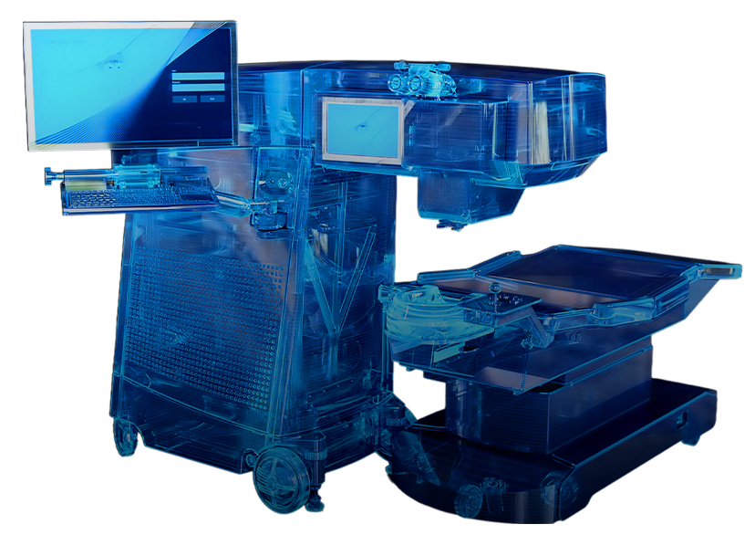
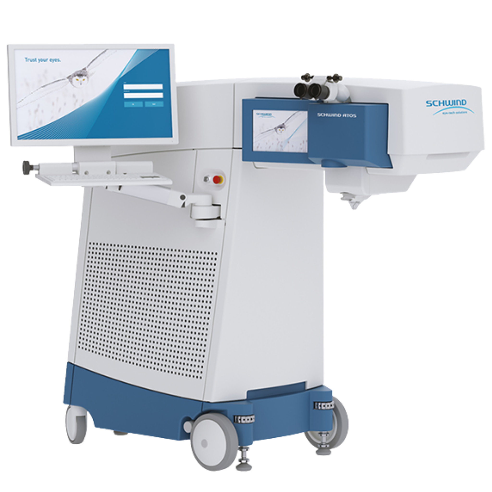
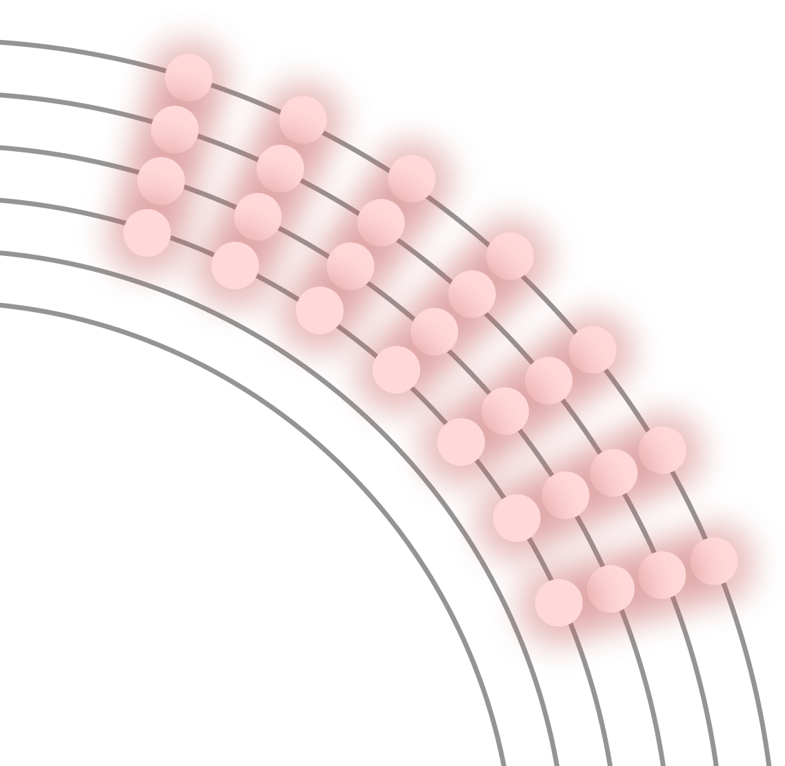
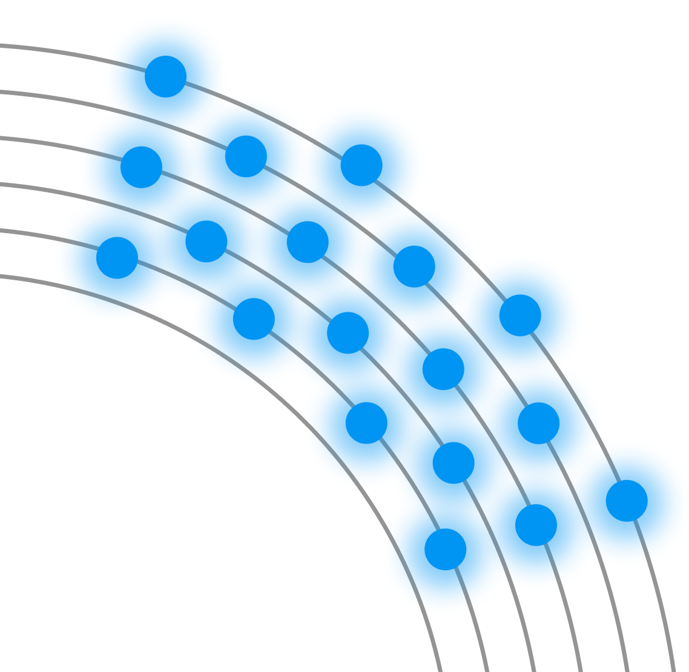
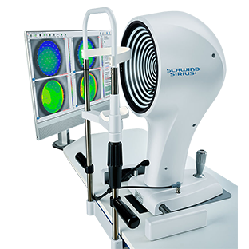
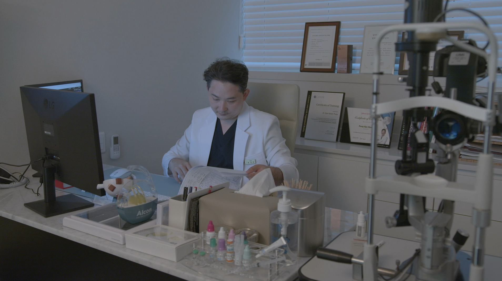

혁신의 혁신을 거듭한 차세대 스마일 라식 스마트 노바 라식
SMART NOVA — 더 선명한 시력을 위한, 끝없는 선택
SMART NOVA — 더 선명한 시력을 위한, 끝없는 선택


스마트 노바 라식은 기존 아토스를 이용한 스마일 스마트라식에 지능형 중심 보정 시스템인 Centrax®와 0.05D 단위의 초정밀 설계가 더해져 뛰어난 안전성, 정확성, 그리고 수술 후 탁월한 선명함의 결과를 만들어 내는 한 차원 높은 차세대 스마일라식 수술입니다.
실시간으로 자동화된 안구 움직임을 보정하여 난시의 축과 중심을 정확하게 교정
0.25 → 0.05 단위로 더 세밀하게 근시, 난시교정이 가능하여 5배 더 정확하게 교정
더 적은 스팟수와 스팟간격을 조절하여 각막손상을 최소화하여 시력의 선명도를 더 높임
미세한 잔여도수 오차까지 능동적으로 추적하고 보정하여 재도킹 발생 최소화시킴
Smile SMART Lasik

기존의 스마일라식보다 8배 빠른 레이저 조사속도와 난시교정의 핵심인 7차원 안구추적장치, 렌티큘의 불필요한 사이드컷을 제거 하게 되면서 빛 번짐을 최소화 할 수 있게 되었습니다.
혁신의 혁신을 거듭한 차세대 스마일 라식
SMART NOVA LASIK

스마트 노바 라식의 혁신적인 기술인 CenTrax®는 자동화된 실시간 안구 움직임을 보정하여 난시의 축과 중심을 정확하게 맞추었고, 5배 더 정확해진 초정밀 맞춤 교정으로 초고도 난시까지 교정이 가능하게 되었습니다. 또한 최소한의 에너지를 이용함으로써 각막 손상을 줄여 빠른 시력회복이 가능합니다.
안구의 미세한 움직임까지 실시간으로 추적하여
단 0.01mm의 오차도 허용하지
않도록 정밀한 결과를 선사합니다.
중심점 이탈 및
미세 오차 발생 가능
- 정밀 난시 교정
- 8배 빠른 속도
- Centrax® 중심 보정 도킹 시스템
- 5배 늘어난 초정밀 교정
(0.25D -> 0.05D 단위)
- 최소한의 열에너지


레이저 스팟이 대칭형으로 배치되어 단위면적당 더 많은 레이저가 사용되어 각막에 열손상 발생

레이저 스팟이 비대칭형으로 배치되어 단위면적당 더 적은 레이저수와 에너지를 이용하여 시력의 선명도를 증가
→ 난시 오차 발생 가능성 있음
→ 난시 정밀 맞춤 교정가능
빛 번짐을 줄여주는 웨이브 프론트를 적용하여 초정밀 맞춤 시력교정

정밀 안구 분석 시스템
모든 사람은 서로 다른 각막 모양과 시력과 빛 번짐에 영향을 주는 고위수차를 가지고 있습니다. 강남센트럴안과에서는 3세대 맞춤형 커스텀 장비인 시리우스 장비를 이용해 웨이브프론트를 적용하여 환자분들의 개인 맞춤형 수술을 진행하고 있습니다.
TECHNICAL COMPARISON
환자의 눈 상태에 가장 적합하고 안전한 시력교정술을 권유합니다.

BRAND MISSION